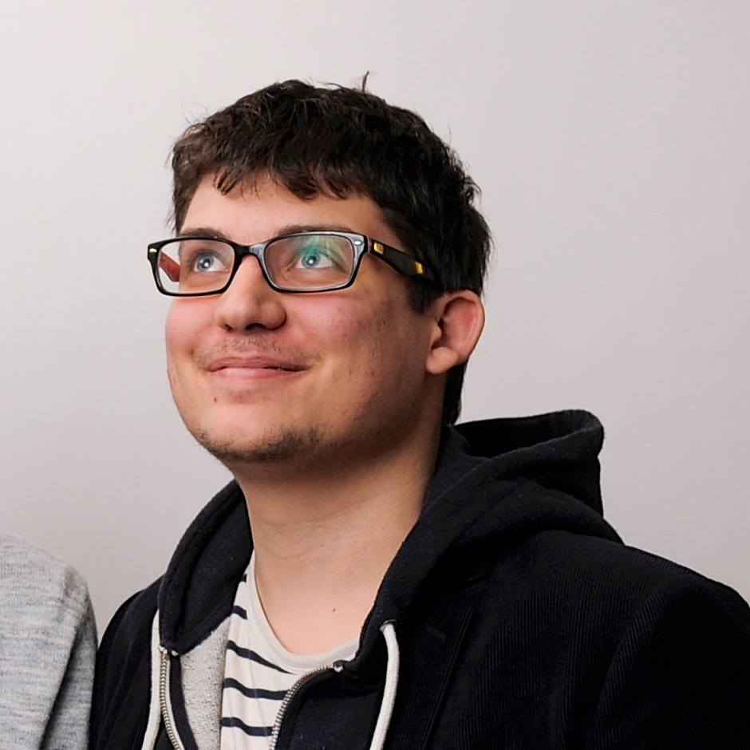

Bonjour Tiz !
J'ai appris que vous étiez en quête d'un nouveau webdesigner,
donc je me suis dis que j'allais faire ce petit site pour me porter candidat.
Je m'appelle Damien Senger et cela va faire cinq ans que je suis webdesigner.
Au cours de ces quelques années, j'ai eu la chance de saisir de nombreuses opportunités dans le domaine de la communication.
À travers ces différentes opportunités, j'ai pu mettre à l'épreuve ma passion pour le webdesign, la typographie et plus globalement les questions de stratégie numérique.
Passionné et débordant d'énergie,
je travaille actuellement en freelance après avoir passé
deux ans dans une petite agence de communication que j'ai
cofondée.
Cette expérience m'a permis de travailler sur de nombreux
projets web et d'animer des formations
professionnelles à destination d'agences de communication.
- Webdesigner freelance depuis janvier 2010
-
Chargé de campagne
octobre 2010 à mars 2011
Europe Écologie Les Verts
-
Formateur vacataire
février 2013 à juin 2013
Université de Strasbourg
-
Webdesigner – formateur
novembre 2012 – septembre 2014
Agence Bretzel et Bredele
-
Webdéveloppeur
depuis janvier 2014
LeQG.info